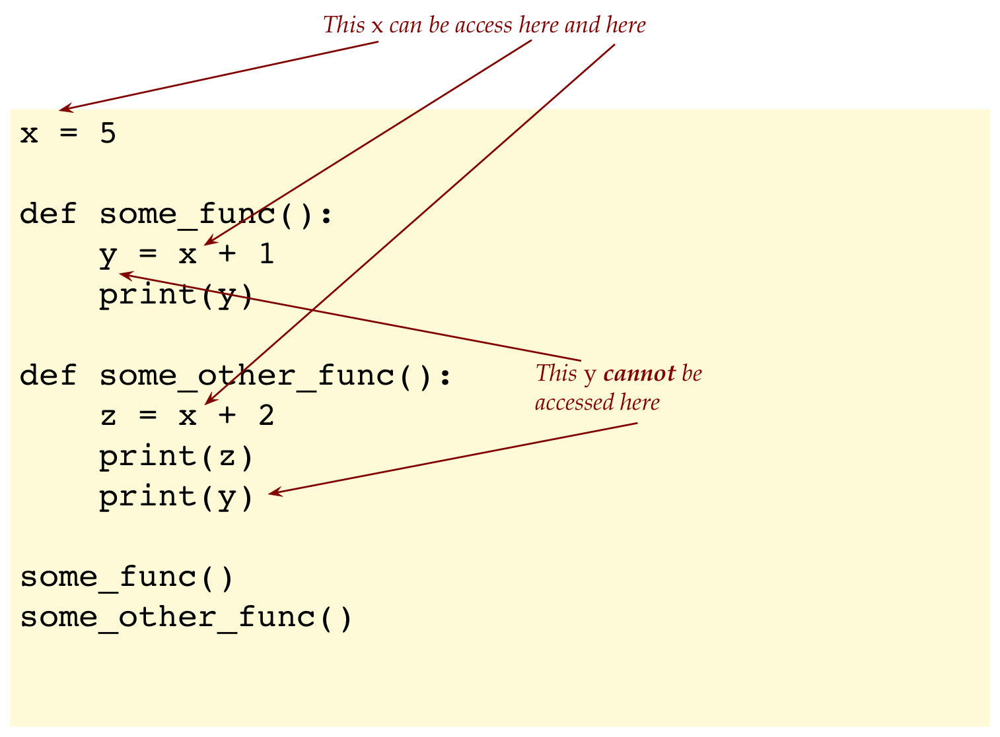

Module 1: Tuples, Sets, Dictionaries and Choropleth Maps
Objectives
This is a somewhat light module aimed at introducing a new member of the family: datatool
- We’ve already worked with drawtool and wordtool.
- Drawtool is based on a popular Python graphing package called Matplotlib:
- Matplotlib is a powerful package for all kinds of plotting.
- However, it can be difficult to understand how to use effectively.
- To simplify, we developed drawtool so that you can perform both plotting and simple drawing.
- Plotly is a recent competitor of Matplotlib:
- Plotly is designed to be web-friendly, to let Python programs have output that renders in a browser, so that websites can display nice graphics.
- Plotly has stronger support for maps (as in geographic maps) than Matplotlib.
- However, just like Matplotlib, it can be difficult to use, especially since there are two fundamentally different kinds of maps.
- Pandas is perhaps the most popular Python package aimed at data handling and data science applications. It too takes a while to learn.
- Thus, to simplify, we have developed datatool, to make it easy to do typical things like plotting graphs but also to work with data files, and especially, maps.
Datatool does not display via its own GUI. Instead, datatool uses a browser, depending on whether you are using Mac or Windows:
- Mac/Linux: If you don’t have Firefox, you will need to install Firefox and have that running (open a tab to any webpage).
- Windows: Your default browser will do.
- Also, you will need to be connected (online) because datatool downloads map data from certain websites.
1.0 Tuples
In this section and the ones that follow, we’ll touch lightly upon a few topics that are “not on the final exam” but will be useful in general.
Some of these concepts will be directly used in the next module.
Suppose we want to write a function that computes both the square and cube of a number:
One option is to write two separate functions
def square(x): return x*x def cube(x): return x*x*x x = 5 print(x, square(x), cube(x))We can alternatively write one function that computes and returns two things:
def do_both(x): square = x*x cube = square*x return (square, cube) x = 5 (y, z) = do_both(x) print(x, y, z)Notice that the return statement returns a pair of values:
return (square, cube)And that the pair is enclosed in parentheses.
And notice that, since two values are being returned, we need a pair to capture the return values:
(y, z) = do_both(x)We can go beyond a pair to any number of such “grouped” variables:
def do_more(x): square = x*x cube = square*x fourth = cube*x fifth = fourth*x return (square, cube, fourth, fifth) x = 5 (a, b, c, d) = do_more(x) print(x, a, b, c, d)Such a grouping of variables is called a tuple.
Tuples are similar to lists in many ways, but different in one crucial aspect:
First, let’s examine how to write the same
do_both()function above but using lists:def do_both_list(x): square = x*x cube = square*x return [square, cube] x = 5 [y, z] = do_both_list(x) print(x, y, z)This works just fine.
Another way in which a tuple is like a list is in using square-brackets and position indices to access individual elements, as in:
# List version: L = do_both_list(x) print(L[0], L[1]) # L[0] has the square, L[1] has the cube # Tuple version: t = do_both(x) print(t[0], t[1]) # t[0] has the square, t[1] has the cubeHowever, here’s the difference:
# List version: L = do_both_list(x) L[0] = 0 # This is allowed # Tuple version: t = do_both(x) t[0] = 0 # This is NOT allowedThus, you can replace a list element but you cannot replace a tuple element.
This is in fact a bit subtle, as this example shows:
x = 3 y = 4 t = (x, y) # The tuple's value is now fixed. print(t) # (3, 4) x = 2 print(t) # (3, 4)Once the tuple is instantiated (that’s the technical term for “made”) then the tuple’s value cannot be changed.
You can of course assign a different tuple value to a tuple variable as in:
t = (1, 2) print(t) t = (3, 4) print(t)Here, we’re simply replacing one fixed-value tuple with another.
Tuples are therefore said to be an immutable type (along with strings).
Why use tuples at all? It’s to allow programmers to signal clearly that their tuples shouldn’t be changed.
This turns out to be convenient for mathematical tuples (like points on a graph), which are similar.
Groups of tuples can be combined into lists and other data structures.
It’s very useful in working with points (the mathematical point you draw with coordinates) and other mathematical structures that need more than one number to describe.
For example, here’s a program that, given a list of points, finds the leftmost point (the one with the least x value).
def leftmost(L):
leftmost_guess = L[0]
for q in L:
if q[0] < leftmost_guess[0]:
leftmost_guess = q
return leftmost_guess
list_of_points = [(3,4), (1,2), (3,2), (4,3), (5,6)]
(x,y) = leftmost(list_of_points)
print('leftmost:', (x,y) )
# leftmost: (1, 2)1.1 Sets
The general mathematical term set means a “collection of like things but without duplicates”.
Python has special syntax and operations to support this mathematical notion:
Here are two sets being defined:
A = {2, 4, 5, 6, 8} # Curly brackets B = {'hello', 'hi', 'hey', 'howdy'}The first set contains five numbers, whereas the second contains four strings.
Consider this variation
A = {2, 4, 5, 6, 8}
B = {'hello', 'hi', 'hey', 'howdy'}
C = {8, 5, 4, 6, 2, 4, 5, 5}
print(C)
if A == C:
print('they are equal')
else:
print('they are not equal')Given what we’ve said about sets, what will be printed?
Even though a set may not have duplicates, we are actually allowed to try to create duplicates:
C = {8, 5, 4, 6, 2, 4, 5, 5}Python simply removes the duplicates.
Python also organizes sets so that sets can be compared for equality: Thus, printing the set
C = {8, 5, 4, 6, 2, 4, 5, 5}actually results in
{2, 4, 5, 6, 8}
What can we do with sets?
The most common operation is to see whether some value is in some set we’ve defined using the keyword in:
def check_vowel(x): vowels = {'a','e','i','o','u'} if x in vowels: print(x, 'is a vowel') else: print(x, 'is not a vowel') check_vowel('a') check_vowel('b')Other, more mathematical operations, feature different ways of combining sets. For example:
A = {2, 4, 5, 6, 8} B = {1, 3, 5, 6} D = A | B # union print(D)Here, D contains every element across both sets.
Other such operators include:
- intersection (elements that are in both sets)
- difference (elements in one set that are not in the other)
Since our goal is merely to give you a taste of these advanced topics, we won’t say much more about these operations.
Instead, let’s look at an application:
- In text processing, the term stopword is often used to describe commonly used words that serve little or no purpose in text analysis:
- When you analyze digitized texts for meaning, topic and dialogue (for example), words like “the”, “of”, “and” get in the way of analysis.
- They are often discarded from text analysis that seeks to analyze more significant words.
- We’ll ask the question: what proportion of text typically consists of stopwords?
(The answer is surprising, as we’ll see). - To answer the question, we’ll scan text word-by-word and see if each word is in the set of stopwords.
- Although there are hundreds of stopwords, we’ll keep things simple by targeting a few.
Let’s write this up:
import wordtool as wt
# The 25 most common stopwords
stopwords = {'the','be','to','of','and','a','in','that','have','I',
'it','for','not','on','with','he','she','you','do','as',
'at','his','her','they','by'}
wt.open_file_byword('alice.txt')
s = wt.next_word()
num_stopwords = 0
total_words = 0
while s != None:
if s in stopwords:
num_stopwords += 1 # Count stopwords
total_words += 1 # And all words
s = wt.next_word()
percent_stopwords = 100 * (num_stopwords/total_words)
# Compare this:
string_to_print = '% of stopwords:{0:.2f}'.format(percent_stopwords)
print(string_to_print)
# to this:
# print(percent_stopwords)As an aside, we’ll point out something about string formatting, which is also an advanced topic:
It’s plain ugly (and often useless) to print out all the digits in a floating number like:
% of stopwords: 31.969357958208498Instead, we’d like
% of stopwords: 31.97Specifying to Python how you’d like a number formatted, unfortunately, is a bit of a chore using somewhat cryptic commands embedded within strings:
string_to_print = '% of stopwords:{0:.2f}'.format(percent_stopwords) print(string_to_print)We’ll explain this one with the understanding that a proper look into this topic is beyond the scope of this course:
First, one builds the target strings using typical quotes, as in:
string_to_print = '% of stopwords: 'Then, attach the format function with the desired variable whose value we wish to print nicely:
string_to_print = '% of stopwords: '.format(percent_stopwords)Then, figure out where in the string you want the resulting number and use curly brackets:
string_to_print = '% of stopwords: {0}'.format(percent_stopwords)Here, 0 means the first such number. If had a second number, we’d use 1, and so on.
Finally, specify both how many digits after the decimal point, and that this number is a float:
string_to_print = '% of stopwords: {0:.2f}'.format(percent_stopwords)
Yes, a bit cryptic and difficult to understand. But eventually, when you get used to it, it’s powerful when you are doing a lot of text output.
1.2 Dictionaries
Consider this problem:
We have a data file that looks like this:
apple banana apple pear banana banana apple kiwi orange orange orange kiwi orangeThis might represent, for example, a record of sales at a fruit stand.
We’d like to count how many of each fruit.
One way would be to define a counter for each kind:
num_apples = 0 num_bananas = 0 num_pears = 0 num_kiwis = 0 num_oranges = 0 with open('fruits.txt','r') as data_file: line = data_file.readline() while line != '': fruit = line.strip() if fruit == 'apple': num_apples += 1 elif fruit == 'banana': num_bananas += 1 elif fruit == 'pear': num_pears += 1 elif fruit == 'kiwi': num_kiwis += 1 elif fruit == 'orange': num_oranges += 1 else: print('unknown fruit:', fruit) line = data_file.readline() print('# apples:', num_apples) print('# bananas:', num_bananas) print('# pears:', num_pears) print('# kiwi:', num_kiwis) print('# oranges:', num_oranges)
Aside from being tedious, this approach has other issues:
- One would like to be able to write a general program that does not need to know which fruits are in a file.
- What if there were a thousand different kinds of items (not fruits, say, but department-store items)?
- A single mistake in a variable can cause the counts to be wrong.
Fortunately, the use of dictionaries will make it easy:
# Make an empty dictionary
counters = dict()
with open('fruits.txt','r') as data_file:
line = data_file.readline()
while line != '':
fruit = line.strip()
if fruit in counters.keys():
# If we've seen the fruit before, increment.
counters[fruit] += 1
else:
# If this is the first time, set the counter to 1
counters[fruit] = 1
line = data_file.readline()
print(counters)Now let’s explain:
A dictionary is a technical term that is only somewhat related to an actual English dictionary.
Think of an English dictionary as something where you look up a word and receive its meaning.
They operations here are look up and receive an associated value (the word’s meaning, in this case).
In Python, a dictionary is a structure that lets you associate one kind of data with another.
The technical equivalent of a word is called a key and the equivalent of the meaning is called the value.
So, a dictionary is a collection of key-value pairs.
Here’s an example:
d = {'apple': 3, 'banana': 3, 'pear': 1, 'kiwi': 2, 'orange': 4}In this case, we’re associating
- The value 3 with the key ‘apple’
- The value 3 with the key ‘banana’
- The value 1 with the key ‘pear’
- The value 2 with the key ‘kiwi’
- The value 4 with the key ‘orange’
Conveniently, Python allows array indexing using the key:
d = {'apple': 3, 'banana': 3, 'pear': 1, 'kiwi': 2, 'orange': 4} print(d['apple']) # Prints 3 d['banana'] = 0 # Which changes the value associated with 'banana' to 3The above is an example of a dictionary that’s already built (after we’ve processed the data).
To process data on-the-fly, we need an additional operation that an English dictionary does not really have: we need to be able to add something that’s not already there.
To add a new key, we simply use it as an index:
d = {'apple': 3, 'banana': 3, 'pear': 1, 'kiwi': 2, 'orange': 4} d['plum'] = 0With this understanding we can now revisit the code in the fruit example:
We’ve seen how to read a file line-by-line before
with open('fruits.txt','r') as data_file: line = data_file.readline() while line != '': fruit = line.strip() # Remove whitespace on either side # This is where we'd do something with the datda line = data_file.readline() # Get the next lineThe rest is merely the dictionary part:
with open('fruits.txt','r') as data_file: line = data_file.readline() while line != '': fruit = line.strip() # Remove whitespace on either side if fruit in counters.keys(): # If we've seen the fruit before, increment. counters[fruit] += 1 else: # If this is the first time, set the counter to 1 counters[fruit] = 1 line = data_file.readline() # Get the next line
1.3 Advanced topic: global variables
Suppose we have the following application:
We prompt the user to enter the parameters (the coordinates of the center, and radius) of circle that needs to be drawn.
We do this repeatedly until the user is done (empty input) and then draw all the circles.
This is the kind of code we’d like to write:
# ... For brevity, we're not showing the import, setting up drawtool etc ... # Read circle data from the user: line = input('Enter circle parameters: ') while line != '': process_line(line) line = input('Enter circle parameters: ') # A method that'll access the list of circles draw_circles() dt.display()What we’ll do is have a list of circles:
# The list of circles circles = [] def process_line(line): # Code for extracting the center coordinates and radius # This will add to the list circles def draw_circles(): # Code for drawing the circles: will access the list circles line = input('Enter circle parameters: ') while line != '': process_line(line) line = input('Enter circle parameters: ') draw_circles() dt.display()Here, the variable
circlesis called a global variable because it can be access inside other functions defined in the file.So, what would be an example of a non-global variable?
Let’s fill out the code and see:
circles = [] # The global variable def process_line(line): parts = line.split() # parts is a local variable x = float(parts[0]) y = float(parts[1]) r = float(parts[2]) circle = (x,y,r) # We've used a tuple here! circles.append (circle) # Accessing global circles def draw_circles(): dt.set_color('b') for c in circles: # Accessing global circles dt.draw_circle(c[0], c[1], c[2]) line = input('Enter circle parameters: ') while line != '': process_line(line) line = input('Enter circle parameters: ') draw_circles() dt.display()
Let’s create a simpler example to illustrate:
Consider this:
x = 5 def some_func(): y = x + 1 print(y) def some_other_func(): z = x + 2 print(z) # print(y) # This would fail: we can't access y here some_func() # Prints 6 some_other_func() # Prints 7Let’s point out: 
Thus: to share variables across functions, define the variables outside the functions.
In which case they become global variables.
That would be the end of it, but there’s one more complication:
You cannot modify a global variable inside a function without explicitly stating an intention to do so.
So, suppose we wanted to modify x in the example:
x = 5 def some_func(): global x # Explicit statement of intent to modify x = x + 1 y = x + 1 print(y) def some_other_func(): z = x + 2 print(z) some_func() # Prints 7 some_other_func() # Prints 8
Now let’s go back to the circle-drawing example to see an instance where modifying a global is useful:
Suppose we want to track the smallest circle (smallest radius) and draw that circle in red.
Thus, as we get user input line-by-line, we’ll need to update the smallest.
Here’s part of the code:
# For brevity, we're not showing the import, setting up drawtool etc # ... (stuff left out) ... # Global variable circles (a list) available to all functions circles = [] smallest_r = 10 smallest = None def process_line(line): global smallest_r, smallest # Identify globals being modified parts = line.split() x = float(parts[0]) y = float(parts[1]) r = float(parts[2]) circle = (x,y,r) if r < smallest_r: smallest_r = r # Modifying global smallest_r smallest = circle # Modifying global smallest circles.append (circle) # Accessing global circles def draw_circles(): # Fill in the code here to draw the smallest in red # and the other circles in blue. # The rest of the code is the same as before ... (read line by line etc)
In my_circles.py, copy over the above and from the earlier example, and then fill in code in the draw_circles() function to complete the program. When the user types, for example,
Enter circle parameters: 3 4 3
Enter circle parameters: 4 3 1
Enter circle parameters: 5 7 2
Enter circle parameters: the output should be: 
1.4 Multiple files
Large Python applications consists of tens of thousands of lines of code.
Most such applications actually consist of hundreds of Python programs bundled together and where one program can call functions in another.
We’ve already seen examples with the use of drawtool and wordtool.
Why are applications broken into multiple files?
- One large file is unwieldy to understand and work with in an editor (imagine the scrolling difficult with a thousand lines).
- It’s much easier to separate out functionality and test each piece. Robustly tested programs can be left alone while refining those that need work.
- Separated functionality is useful in other projects.
- If one piece needs upgrading, you can upgrade just that part if it’s in a separate file.
Let’s build a simple example:
Suppose we put together a file called
my_math_functions.pywhich hasimport math pi = 3.141 def square(x): return x*x def cube(x): return x*x*x def distance(x1, y1, x2, y2): # Write your code hereThen in an another file called
my_math_application.pyyou could write:import my_math_functions as m x = 2 y = m.square(5) print(y) x2 = 3 y2 = m.cube(x2) print(y2) d = m.distance(x,y, x2, y2) print(d)Notice the
importstatement at the top of the file:import my_math_functions as mThis has the
importkeyword, the name of the other file, and a shortcut.If we did not have the shortcut, we’d have to write code like:
import my_math_functions x = 2 y = my_math_functions.square(5) print(y)Which is perfectly legit but a bit tedious.
To access something from another file, we use the dot (period):
y = m.square(5)One can access a variable in the other file as well.
python print(m.pi)
1.5 String formatting and numbers
Consider this program:
x = 0
for i in range(5):
print('i=', i, 'x=', x)
x += 0.1You observed output like:
i= 0 x= 0
i= 1 x= 0.1
i= 2 x= 0.2
i= 3 x= 0.30000000000000004
i= 4 x= 0.4Why the ugly output?
- There are really three questions here, the second of which is a bit subtle.
- The first one is: why doesn’t Python see that most of the other values are bring printed nice, so why not print
0.3instead of0.30000000000000004? - The second, more sutble one, is: our for-loop clearly wants to increment by 0.1, which means x should be 0.3 and not 0.30000000000000004.
- The third implied question is: how do we actually limit the number of digits printed after the decimal?
Let’s answer these questions:
Why doesn’t Python recognize unnecessary digits?
- This is because Python does not want to second guess the programmer’s intent.
- Maybe you do want the digits.
How did 0.3 become 0.30000000000000004?
- A computer’s memory has two kinds of limitations, and one “feature”.
- One: it cannot store beyond a certain accuracy (and computers differ based on their hardware).
- Two: when calculations are performed, this storage limitation forces some arithmetic to be slightly wrong (many digits after the decimal point).
- The “feature” is that computers store binary numbers, not our kind of decimal numbers. This means a decimal version of a binary number might have to be an approximation.
OK, how do we actually print nicely?
- This is a bit of an advanced topic, so we’ll only provide a simple example.
- The solution is to use a special set of formatting commands, like the ones you saw a long time ago (remember ?)
Here’s how it works for the above program:
x = 0
for i in range(5):
format_string = 'i = {0:2d} x = {1:.2f}'
string_to_print = format_string.format(i, x)
print(string_to_print)
x += 0.1Let’s explain:
A format string is the eventual desired string that needs to be printed but with some placeholders:
format_string = 'i = {0:2d} x = {1:.2f}'In this case, there are two placeholders:
format_string = 'i = {0:2d} x = {1:.2f}'Placeholders are enclosed in curly brackets.
Each placeholder begins with a number that will eventually determine which variable gets its value into the placeholder.
So, here we have variables 0 and 1:
format_string = 'i = {0:2d} x = {1:.2f}'We feed the values via the
format()function:format_string = 'i = {0:2d} x = {1:.2f}' string_to_print = format_string.format(i, x)This is what lets
format()put the value of i in place of the “0” and the value of x in place of the “1”.All that’s left to explain are the cryptic commands that follow the “0” and “1” respectively:
format_string = 'i = {0:2d} x = {1:.2f}'The first one says, in effect, “use a minimum of 2 spaces and expect an integer”. The second says “expect a float and restrict the number of post-decimal digits to 2”.
String formatting has more to it, but that’s all we’ll say about it here.
1.6 Randomness
As we’ve seen throughout the course, it is useful to be able to have Python generate random numbers:
- We use random numbers to answer statistical questions.
- Random numbers were also useful in creating patterns, as in art.
However, there’s an important thing to know about random generation.
Consider this program:
import random
#random.seed(123)
for i in range(5):
x = random.uniform(1.0, 10.0)
print(x)How random generation works:
- Python uses a mathematical function with a so-called “seed” to produce random numbers.
- The numbers aren’t really random, because a particular seed will produce the same numbers, which is why they’re called pseudorandom numbers.
- However, if we’re doing things like computing averages, a pseudorandom sequence, provided it’s long enough, is a reasonably good approximation.
- Is there ever a reason to fix a seed?
- Turns out, yes. It’s very useful for debugging.
- Using a seed causes your program to be repeatable (with the same pseudorandom sequence).
- So, typically, one uses a seed when getting your program to work.
- After it’s working, you can comment out the seed.
- If a seed is not provided, Python uses the local time or something like that as the seed, so that repeated runs produce different results.
1.7 What else is there in Python?
Our goal in this almost-final module was to:
- Introduce the all-important topic of arrays.
- Lightly sketch a few advanced topics to introduce ideas and show some examples, without expecting mastery of all the details.
In the next module, we will dive into examples from across the disciplines. Some of these advanced topics will be useful
So, one might ask: what’s left in Python to learn?
Quite a bit it turns out:
- Like many modern programming languages, Python is large enough that one needs a few courses to experience all of it.
- Some concepts are advanced enough to need weeks to cover (example: objects).
- Others need a background in data structures to understand how they work (example: dictionaries).
- Yet others involve library functions and external packages.
Do you need to learn more? Is what we’ve learned enough to achieve a good deal?
We’ll have more to say about this in a later module.
1.8 Getting set up for datatool
If you’ve downloaded Anaconda as directed earlier in the course, you should already have Pandas and Plotly installed.
Let’s give this a test.
To use datatool, you must follow the separate instructions for Mac and Windows:
- Mac users: you need to have Firefox running and open to any page, such as this one.
- Windows users: Your default browser will do.
You also need to be connected because datatool downloads some map-drawing files from designated websites.
1.9 CSV data
When hearing buzzwords like “data science” or “data analytics”, one is led to ask: exactly what is meant by data, and what form does it take on computers?
We need to be aware of two such forms:
- One is the form it takes as a file.
- The other is: how do we store it in our Python code?
Here are some basic types of data files:
- Text data. This is just plain text but can be found (and stored) as files of different kinds: Word files, plain text files (as we’ve seen with our text examples), and webpages (which contain text).
- Example: see this file
- Here, the data is in plain text format, which means we can use something like wordtool to iterate through words, letters etc.
- Once we’ve read the words in the file, our program could store the words in a list.
- Numeric-only data. This kind of data is often presented in plain text files:
- Example: see this file, which has pressure-difference readings from two weather stations in the Pacific (it’s called the Southern Oscillation, used to predict El-Nino).
- There’s one reading for each month, a list of 12 numbers.
- Numbers are often stored in arrays inside a program.
- Image data. Images are stored in various formats such as JPG or PNG.
- Example: see this JPG file.
- As we’ve seen, a color image is stored as 3D array in a program.
{kind=link}
CSV files for mixed data:
Most real world data sets combine different data together.
For example, even in purely numeric data (such as the weather data example above), we might have multiple “columns” of data as in:
Oscillation Year Year Month ---------------------------------------------- -0.7 1955 1955 1 1.3 1955 1955 2 0.1 1955 1955 3 -0.9 1955 1955 4 0.8 1955 1955 5 1.6 1955 1955 6 1.7 1955 1955 7 1.4 1955 1955 8 1.4 1955 1955 9 1.5 1955 1955 10 1.4 1955 1955 11 0.9 1955 1955 12But even more commonly, numeric and text data are often found together, as in:
city lat long country iso2 iso3 population Tokyo 35.6897 139.6922 Japan JP JPN 37977000 Jakarta -6.2146 106.8451 Indonesia ID IDN 34540000 Delhi 28.6600 77.2300 India IN IND 29617000 Mumbai 18.9667 72.8333 India IN IND 23355000 Manila 14.5958 120.9772 Philippines PH PHL 23088000 Shanghai 31.1667 121.4667 China CN CHN 22120000 Sao Paulo -23.5504 -46.6339 Brazil BR BRA 22046000 Seoul 37.5833 127.0000 Korea, South KR KOR 21794000 Mexico City 19.4333 -99.1333 Mexico MX MEX 20996000 Guangzhou 23.1288 113.2590 China CN CHN 20902000This type of table-like format is possibly the most common type of data.
While one could store this in a plain text file as in this example, it is much more convenient to use the CSV format.
The same data in CSV format looks like this:
city,lat,long,country,iso2,iso3,population Tokyo,35.6897,139.6922,Japan,JP,JPN,37977000 Jakarta,-6.2146,106.8451,Indonesia,ID,IDN,34540000 Delhi,28.66,77.23,India,IN,IND,29617000 Mumbai,18.9667,72.8333,India,IN,IND,23355000 Manila,14.5958,120.9772,Philippines,PH,PHL,23088000 Shanghai,31.1667,121.4667,China,CN,CHN,22120000 Sao Paulo,-23.5504,-46.6339,Brazil,BR,BRA,22046000 Seoul,37.5833,127.0,"Korea, South",KR,KOR,21794000 Mexico City,19.4333,-99.1333,Mexico,MX,MEX,20996000 Guangzhou,23.1288,113.259,China,CN,CHN,20902000- Whitespace is removed
- Commas are used to separate data.
For the above example, this is the CSV file, which you can store and open in Excel or Google-sheets.
- You can see why CSV stands for “Comma Separated Values”.
Next, let’s write some code to work with CSV files.
from datatool import datatool
dt = datatool()
dt.load_csv('cities.csv')
dt.print_data()It is often convenient CSV data into an array, as in this example:
from datatool import datatool
dt = datatool()
dt.load_csv('cities.csv')
D = dt.get_data_as_array()
print(D)1.10 Using datatool for plotting
Often, one of the first things we do with data is to plot the data, or at least parts of it.
With datatool, that is as simple as this:
from datatool import datatool
dt = datatool()
dt.load_csv('simpledata.csv')
# A basic line graph. 'X' and 'Y' are the column headers.
dt.line_graph('Y', 'X')
dt.display()Let’s examine the data:
The CSV file looks like this:
X,Y 1,1 2,2 3,3 4,5 5,8 6,13 7,21 8,34 9,55 10,89This is merely a list of points with x,y coordinates.
In my_plot_example.py, plot ‘X’ against ‘Y’ to get 
Mac Users: Don’t forget to have Firefox running before you run the program.
One can plot categorical (non-numeric) data as well:
from datatool import datatool
dt = datatool()
dt.load_csv('cities.csv')
dt.line_graph('city', 'population')
dt.display()It is possible to depict multiple curves on one plot:
Consider this data set: simpledata2.csv,
X,Y,Z,W 1,1,89,88 2,2,55,53 3,3,34,31 4,5,21,16 5,8,13,5 6,13,8,5 7,21,5,16 8,34,3,31 9,55,2,53 10,89,1,88Here, there are four columns.
We will plot the 2nd, 3rd, and 4th columns against the 1st:
from datatool import datatool dt = datatool() dt.load_csv('simpledata2.csv') # Note: how to place a title on a graph: dt.set_title('X vs Y, W, Z') dt.line_graph('X', 'Y') dt.line_graph('X', 'Z') dt.line_graph('X', 'W') dt.display()
When Plotly (via datatool) displays in the browser, there are additional controls included, such as zoom in/out: 
Next, let’s use datatool to plot a bar chart:
from datatool import datatool
dt = datatool()
dt.load_csv('simpledata2.csv')
dt.bar_chart('X', 'Y')
dt.bar_chart('X', 'Z')
dt.display()Which produces
In my_plot_example2.py, use the cities.csv data to plot a bar chart of city populations as in 
Next up: bubble charts
from datatool import datatool
dt = datatool()
dt.load_csv('simpledata2.csv')
dt.bubble_chart('X', 'Y', bubblesize='Y')
dt.display()Which produces
- We need to tell datatool which column to use for the size of the bubbles.
- It is possible to use one column for the center of each bubble (as if plotting points) and another for bubble sizes.
In my_plot_example4.py, use the cities.csv dataset to plot a bubble chart of city populations as in: 
1.11 Using datatool for drawing
Datatool as drawing functions similar to drawtool:
from datatool import datatool
dt = datatool()
# Set the range along each axis:
dt.set_x_range(0, 10)
dt.set_y_range(0, 10)
# Set line width:
dt.set_draw_width(2)
# Draw some lines and shapes
dt.set_draw_color('blue')
dt.draw_line(2,3, 8,9)
dt.set_draw_color('green')
dt.draw_rectangle(7,2, 3,4)
dt.draw_ellipse(7,2, 3,4)
dt.set_draw_color('red')
dt.draw_arrow(3,8, 5,7, 5, 2)
# Draw text
dt.draw_text(8.5, 4, 'Bullseye')
dt.display()Which produces 
1.12 Using datatool with generated data
In some situations, we end up generating data with our code. This means the data is not in some CSV file.
For example, suppose we want to plot the numbers 0 through 10 and their squares using:
for i in range(11):
x = i
y = x * x # The square of x
# We'd like to plot these x,y values as points in a graphThere are two options:
- Create a CSV from the above program, and then load that into datatool.
- Avoid creating a file and directly feed the data into datatool.
Let’s use the latter approach since it avoids having to create a file.
from datatool import datatool
import numpy as np
dt = datatool()
# Make an empty array with zeroes (dtype='f' means float numbers)
# Other kinds are 'int'
A = np.zeros( (11, 2), dtype='f')
# Now fill the array with generated data:
for i in range(11):
x = i
y = x * x
A[i,0] = x # First col has x
A[i,1] = y # Second has y
# We now want to plot the second column in A against the first
# Hand the array over to datatool, specifying column names:
dt.set_data_from_array(A, col_headers=['X','Y'])
dt.line_graph('X', 'Y')
dt.display()Which produces
Notice how we ask Numpy to create an array of the right size:
A = np.zeros( <b>(11, 2)</b>, dtype='f')That is, 11 rows for the numbers 0 through 10 and 2 columns for the x,y values.
Notice that (11, 2) is specified as a tuple.
(Recall tuples from Module 1 of this unit.)The array A now has 11 rows and 2 columns, with each entry set to 0.
After that, we fill in the values we generate:
for i in range(11): x = i y = x * x A[i,0] = x A[i,1] = yWhich we could shorten to:
A[i,0] = i A[i,1] = i * iThe CSV equivalent (which we don’t need here) would look like this:
0,0 1,1 2,4 3,9 4,16 5,25 6,36 7,49 8,64 9,81 10,100
1.13 Using datatool for maps
One of the more exciting uses of Plotly is to display maps and draw on them.
Let’s think about what a map really is:
- Whereas a standard 2D plot depicts an x-axis and a y-axis, a map could be a region of the globe or the whole globe forced into 2D depiction (sometimes awkwardly).
- The coordinate system uses angles called latitudes and longitudes.
There are fundamentally two types of digital maps:
- A vector map or line map is a collection of lines and other such geometric entities which, if drawn like lines typically are, will show a map.
- A vector map is most often a very basic map with simple lines for boundaries.
- Vector maps are efficient because it doesn’t take much storage space to store lines (you only need the coordinates of the end points of each line).
- A tile map is really a collection of tiles put together to form a map:
- An individual tile can itself be an image (as in a ‘satellite view’) or a combination of image and geometric objects.
- Tilemaps generally look nicer because tiles can be pre-built with accurate and rich detail.
- However, detailed tiles can be slow to load, as you’ve no doubt notice when zooming quickly with Google-maps.
Because of these and other differences, map drawing can sometimes be confusing.
Let’s look at an example of a simple line-map:
from datatool import datatool
dt = datatool()
dt.load_csv('cities.csv')
# We need to specify which columns of cities.csv have
# the latitude and longitude, respectively.
dt.linemap('lat', 'long')
dt.display()You need to be connected to the internet because datatool downloads map data from certain websites.
You may see an “Aa” legend by the side, depending on which version of Plotly was installed by Anaconda.
The CSV file looks like this;
city,lat,long,country,iso2,iso3,population Tokyo,35.6897,139.6922,Japan,JP,JPN,37977000 Jakarta,-6.2146,106.8451,Indonesia,ID,IDN,34540000 Delhi,28.66,77.23,India,IN,IND,29617000 Mumbai,18.9667,72.8333,India,IN,IND,23355000 Manila,14.5958,120.9772,Philippines,PH,PHL,23088000 Shanghai,31.1667,121.4667,China,CN,CHN,22120000 Sao Paulo,-23.5504,-46.6339,Brazil,BR,BRA,22046000 Seoul,37.5833,127.0,"Korea, South",KR,KOR,21794000 Mexico City,19.4333,-99.1333,Mexico,MX,MEX,20996000 Guangzhou,23.1288,113.259,China,CN,CHN,20902000The columns that have the latitude and longitude happen to be called
latandlong.Which is what we need to tell datatool:
dt.linemap(<b>'lat', 'long'</b>)Datatool then (via Plotly) draws a world map as default with one red dot per latitude-longitude pair extracted from those columns.
Next, let’s label the cities and draw a line:
from datatool import datatool
dt = datatool()
dt.load_csv('cities.csv')
dt.linemap('lat', 'long', 'city')
# This needs to come <b>after</b> the linemap() function call.
dt.linemap_add_line(-23.5504,-46.6339, 19.4333,-99.1333)
dt.display()The city labels are crowded and overwrite each other in places. In general, map labeling is a challenging issue.
There is a more detailed version of linemap drawing that allows one to set the size of labels (markers), create “hover” text, and so on:
dt.linemap_detailed(
'lat',
'long',
marker_color='Red',
marker_size=10,
marker_text='city',
marker_text_size=9,
hovertext=['city', 'population'],
showlegend=False)1.14 Choropleth maps
A choropleth map shows regions in colors that imply a quantity associated with a region.
Datatool displays choropleths using linemaps.
For example, let’s show country populations from our running example in a choropleth map:
from datatool import datatool
dt = datatool()
dt.load_csv('2011_population.csv')
# Changes the colorscale of the choropleth_iso3()
dt.set_color_scale('rainbow')
# More choices here: https://plotly.com/python/builtin-colorscales/
# The choropleth_iso3() function uses a standard code for countries.
# The second parameter describes which column to use for heat-map
# like coloring. The third is what to show when the mouse hovers.
dt.choropleth_iso3('countrycode', 'pop', 'country')
dt.display()Which produces: 
1.15 Using datatool for maps: tilemaps
Let’s look at our 10 cities using a tilemap:
from datatool import datatool
dt = datatool()
dt.load_csv('cities.csv')
# The first two identify the lat/long columns. The third
# is the column with the data to be drawn.
dt.tilemap_attach_col_lat_long('lat', 'long', 'city')
dt.tilemap()
dt.display()- For tilemaps, we first need to identify the columns that have the latitudes and longitudes, along with the “data” column.
- The data column has the strings that we want shown at those latitudes and longitudes.
Type up the above in my_tilemap_example.py and confirm that you see 
Now let’s draw a line between two cities:
from datatool import datatool
dt = datatool()
dt.load_csv('cities.csv')
dt.tilemap_attach_col_lat_long('lat', 'long', 'city')
# For tilemaps, line drawing must <b>precede</b> the call to tilemap.
dt.tilemap_add_line(-23.5504,-46.6339, 19.4333,-99.1333)
dt.tilemap()
dt.display()Type up the above in my_tilemap_example2.py and confirm that you see 
The above shows the full world map centered at latitude 0, longitude 0.
A more detailed version of the tilemap function allows you to set the zoom and center, among other items:
dt.tilemap_attach_col_lat_long('lat', 'long', 'city')
# Define a different center:
c = dict(lat = 30, lon = 120)
# The detailed version specifies hover data, the center, a zoom level
dt.tilemap_detailed(hover_name='city', hover_data=['city'], center=c, zoom=2, title='Some cities')There is also an intermediate-detail version with just center, zoom and title:
dt.tilemap_attach_col_lat_long('lat', 'long', 'city')
c = dict(lat = 30, lon = 120)
# Intermediate-detail: center, zoom, title:
dt.tilemap_czt(center=c, zoom=2, title='Some cities')Finally, let’s look at an example with street maps, where tilemaps really stand out:
from datatool import datatool
dt = datatool()
dt.load_csv('parkingtickets_June2020.csv')
dt.tilemap_attach_col_lat_long('LATITUDE', 'LONGITUDE', 'FINE_AMOUNT')
# DC's lat/long:
dc_latlong = dict(lat = 38.92, lon = -77.07)
dt.tilemap_detailed(
hover_name='LOCATION',
hover_data=['VIOLATION_PROC_DESC'],
center=dc_latlong,
zoom=11,
title='DC Parking Violations June 2020')
dt.display()Download parkingtickets_June2020.csv and type up the above in my_tilemap_example3.py Run and confirm that you see: